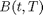
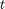
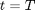
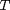
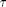
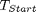
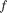

Swaption Price
The class returns a three dimensional data series object of swaption prices with axes corresponding to the maturity, tenor and strike rates of the underlying swap contracts.
Contents
%MATLAB Code %%%%%%%%%%%%%%%%%%%%%%%%%%%%%%%%%%%%%%%%%%%%%%%%%%%%%%%%%%%%%%%%%%%%%%%%%%% classdef bootstrap_SwaptionPrice < handle
%%%%%%%%%%%%%%%%%%%%%%%%%%%%%%%%%%%%%%%%%%%%%%%%%%%%%%%%%%%%%%%%%%%%%%%%%%%
How to use the class
There are three ways to use this class:
- To produce a three dimensional data series object of swaption prices with axes corresponding to the maturity, tenor and strike rates of the underlying swaption contracts.
- To produce a three dimensional data series object of log-normal swaption volatilities with axes corresponding to the maturity, tenor and strike rates of the underlying swaption contracts.
- To produce a three dimensional data series object of normal swaption volatilities with axes corresponding to the maturity, tenor and strike rates of the underlying swaption contracts.
Properties
[ZCBPRICES] : The price of a zero coupon bond, , at present time, , which pays 1 at maturity, .
Data type : Data series, doubles
[ZCBMaturities] : Times, , when the zero coupon bonds mature.
Data type : Data series, doubles
[outputfreq] : A string that lists the number of monthly, quarterly, semi-annual and annual intervals.
Data type : string
[SwapTenors] : The length of the swap contracts, .
Data type : string
[SwaptionMaturities] : Times when swaptions expire. This are also the times when the swap contracts begin, .
Data type : string
[SwaptionAbsDiffStrikes] : Swaption strike rates, which are defined as their absolute difference above the initial forward swap rates.
Data type : string
[CompoundingFrequency] : The annual frequency, , at which the underlying swap contract is settled.
Data type : double
[volatilityType] : Specifies whether the volatility is 'lognormal vol' or 'normal vol'. Please note that the ability to cope with 'normal vol' is yet to be included.
Data type : string
[OptionType] : Specifies whether the swaption is a 'call' or a 'put'. For a call swaption the buyer has the option to receive the fixed rate and pay the floating rate. For a put option the buyer has the option to receive the floating rate and pay the fixed rate.
Data type : string
[OutputType] : Specifies whether the class will output swaption 'Price', 'LogNormal Vol' or 'Normal Vol'.
Data type : string
[newDataSeriesObject] : A new data series oject setup to store results.
Data type : -
%MATLAB Code %%%%%%%%%%%%%%%%%%%%%%%%%%%%%%%%%%%%%%%%%%%%%%%%%%%%%%%%%%%%%%%%%%%%%%%%%%% properties ZCBPRICES ; ZCBMaturities ; outputfreq ; SwapTenors ; SwaptionMaturities ; SwaptionAbsDiffStrikes ; CompoundingFrequency; volatilityType; OptionType OutputType newDataSeriesObject end %%%%%%%%%%%%%%%%%%%%%%%%%%%%%%%%%%%%%%%%%%%%%%%%%%%%%%%%%%%%%%%%%%%%%%%%%%%
List of Methods
The class introduces one new method:
1)[bootstrap_SwaptionPrice()] : Function returns a three dimensional data series object of swaption prices, or volatilities, with axes corresponding to the maturity, tenor and strike rates of the underlying swap contracts.
%MATLAB Code %%%%%%%%%%%%%%%%%%%%%%%%%%%%%%%%%%%%%%%%%%%%%%%%%%%%%%%%%%%%%%%%%%%%%%%%%%% methods
% Constructor function obj = bootstrap_SwaptionPrice() end %%%%%%%%%%%%%%%%%%%%%%%%%%%%%%%%%%%%%%%%%%%%%%%%%%%%%%%%%%%%%%%%%%%%%%%%%%%
ans =
Bootstrap.bootstrap_SwaptionPrice handle
Package: Bootstrap
Properties:
ZCBPRICES: []
ZCBMaturities: []
outputfreq: []
SwapTenors: []
SwaptionMaturities: []
SwaptionAbsDiffStrikes: []
CompoundingFrequency: []
volatilityType: []
OptionType: []
OutputType: []
newDataSeriesObject: []
Details of Methods
- [bootstrap_SwaptionPrice()]
"""""""""""""""""""""""""""""""""""""""""""""""""""""""""""""""""""""""""
Description
Function returns a three dimensional data series object of swaption prices, or volatilities, with axes corresponding to the maturity, tenor and strike rates of the underlying swap contracts.
Inputs
[ZCBPRICES] : The price of a zero coupon bond, , at present time, , which pays 1 at maturity, .
Data type : Data series, doubles
[ZCBMaturities ] : Times, , when the zero coupon bonds mature.
Data type : Data series, doubles
[outputfreq] : A string that lists the number of monthly, quarterly, semi-annual and annual intervals.
Data type : string
[SwapTenors] : The length of the swap contracts, .
Data type : string
[SwaptionMaturities] : Times when swaptions expire. This are also the times when the swap contracts begin, .
Data type : string
[SwaptionAbsDiffStrikes] : Swaption strike rates, which are defined as absolute difference above forward swap rates.
Data type : string
[CompoundingFrequency] : The annual frequency, , at which the underlying swap contract is settled.
Data type : double
[volatilityType] : Specifies whether the volatility is 'lognormal vol' or 'normal vol'. Please note that the ability to price with 'normal vol' is yet to be included.
Data type : string
[OptionType] : Specifies whether the swaption is a 'call' or a 'put'. For a call swaption the buyer has the option to receive the fixed rate and pay the floating rate. For a put option the buyer has the option to receive the floating rate and pay the fixed rate.
Data type : string
[OutputType] : Specifies whether the class will output swaption 'Price', 'LogNormal Vol' or 'Normal Vol'
Data type : string
Outputs
A three dimensional data series object of swaption prices, or volatilities, with axes corresponding to the maturity, tenor and strike rates of the underlying swap contracts.
Calculations
First, equilibrium forward swap rates and annuity factors are calculated using the EQFORWARDSWAPRATE() class (please see separate documentation for details).
To find the implied volatility (normal or lognormal) the volatility is taken from Dataseries(2) and multiplied or divided by the forward swap rate to give the implied volatility for normal or lognormal, respectively.
If the chosen output type is 'price' then swaption prices are calculated using the BlackPrice() class (please see separate documentation for details).
%MATLAB Code %%%%%%%%%%%%%%%%%%%%%%%%%%%%%%%%%%%%%%%%%%%%%%%%%%%%%%%%%%%%%%%%%%%%%%%%%%% function results = bs(obj,DataSeriesIn, ParametersIn)
%%%%%%%%%%%%%%%%%%%%%%%%%%%%%%%%%%%%%%%%%%%%%%%%%%%%%%%%%%%% % Step 1 :: enter comma separated data into arrays newobject = prursg.Bootstrap.bootstrap_ZCBtoSwapRate; obj.SwapTenors = newobject.createArrayfromCSVstring... (ParametersIn{1}); obj.SwaptionMaturities = newobject.createArrayfromCSVstring... (ParametersIn{2}); obj.SwaptionAbsDiffStrikes = newobject.createArrayfromCSVstring... (ParametersIn{3}); obj.CompoundingFrequency = ParametersIn{4}; obj.volatilityType = DataSeriesIn(2).volatilityType; obj.OutputType = ParametersIn{5}; obj.OptionType = ParametersIn{6}; obj.ZCBPRICES = DataSeriesIn(1).values; obj.ZCBMaturities = DataSeriesIn(1).axes(1).values;
%%%%%%%%%%%%%%%%%%%%%%%%%%%%%%%%%%%%%%%%%%%%%%%%%%%%%%%%%%%%%%%%%%%%%% % Step 2 :: Set-Up data series object to store results % :: use existing raw data series object to achieve this inumberOfDates = size(DataSeriesIn(1),1); obj.newDataSeriesObject = prursg.Engine.DataSeries_DynamicV3(); obj.newDataSeriesObject.dates = DataSeriesIn(1).dates; obj.newDataSeriesObject.values = cell( inumberOfDates, 1); obj.newDataSeriesObject.axes(1).values = obj.SwapTenors; obj.newDataSeriesObject.axes(2).values= obj.SwaptionMaturities; obj.newDataSeriesObject.axes(3).values= obj.SwaptionAbsDiffStrikes; obj.newDataSeriesObject.axes(1).title = 'Swap Tenor'; obj.newDataSeriesObject.axes(2).title = 'Swaption Maturity'; obj.newDataSeriesObject.axes(3).title = 'Swaption Strikes'; %%%%%%%%%%%%%%%%%%%%%%%%%%%%%%%%%%%%%%%%%%%%%%%%%%%%%%%%%%%%%%%% % Add Dynamic properties obj.newDataSeriesObject.addprop('description'); obj.newDataSeriesObject.addprop('ratetype'); obj.newDataSeriesObject.addprop('compounding'); obj.newDataSeriesObject.addprop( 'compoundingfrequency'); obj.newDataSeriesObject.addprop('daycount') ; obj.newDataSeriesObject.addprop('units') ; obj.newDataSeriesObject.addprop('optiontype'); obj.newDataSeriesObject.addprop('volatilityType'); %%%%%%%%%%%%%%%%%%%%%%%%%%%%%%%%%%%%%%%%%%%%%%%%%%%%%%%%%%%%%%%% % Set property values obj.newDataSeriesObject.description = {'derived swaption prices'}; obj.newDataSeriesObject.ratetype = {'swap'}; obj.newDataSeriesObject.compounding ={'ann'}; obj.newDataSeriesObject.compoundingfrequency = ... {obj.CompoundingFrequency}; obj.newDataSeriesObject.daycount ={'na'}; obj.newDataSeriesObject.units ={'absolute'}; obj.newDataSeriesObject.optiontype ={obj.OptionType}; obj.newDataSeriesObject.volatilityType = {obj.OutputType}; SWAPRATETENOR = 1/ obj.CompoundingFrequency;
%%%%%%%%%%%%%%%%%%%%%%%%%%%%%%%%%%%%%%%%%%%%%%%%%%%%%%%%%%%%%%%%%%%%%% % Step 3 :: Calculate Data Series Values newblackpriceObject = prursg.Bootstrap.bsBlackPrice; if strcmp( lower(obj.OutputType) , lower(obj.volatilityType) ) % Simply return inputted volatility values values obj.newDataSeriesObject.values = DataSeriesIn(2).values ; else for i= 1 : inumberOfDates obj.newDataSeriesObject.values{i,1} = ... zeros(size(obj.newDataSeriesObject.axes(1).values,2)... ,size(obj.newDataSeriesObject.axes(2).values,2)); for j = 1 : size(obj.newDataSeriesObject.axes... (1).values,2) SwapTenor = obj.newDataSeriesObject.axes(1).values(j); for k = 1 : size(obj.newDataSeriesObject.axes(2)... .values,2) SwaptionMaturity = obj.newDataSeriesObject... .axes(2).values(k); [swapRate annuityValue]= ... newobject.EQFORWARDSWAPRATE(obj.ZCBPRICES{1,i}... ,obj.ZCBMaturities, SwaptionMaturity,... SwapTenor, SWAPRATETENOR); for l = 1 : size(obj.newDataSeriesObject.axes(3)... .values,2) SwaptionStrike = max(0,swapRate +... obj.newDataSeriesObject.axes(3).values(l)); % Get swaption implied volatility :: W expect % a perfect match can be found in the input % swaption volatility matrix impliedVolatility = DataSeriesIn(2)... .getDataByName(SwapTenor,SwaptionMaturity,... (SwaptionStrike -swapRate)); switch lower(obj.OutputType) case 'normal vol' value = impliedVolatility*swapRate; case 'lognormal vol' value = impliedVolatility/swapRate; case 'price' SwaptionStrike = max(0,swapRate + ... obj.newDataSeriesObject.axes(3)... .values(l)); switch lower(obj.volatilityType) case 'lognormal vol' value = newblackpriceObject... .BlackPrice( swapRate ,... SwaptionStrike , ... SwaptionMaturity ,... impliedVolatility , ... annuityValue,... obj.OptionType ); case 'normal vol' % placeholder for the % gaussian pricing formulae end end obj.newDataSeriesObject.values{i,1}(j,k, l) ... = value ; end end end end end
%%%%%%%%%%%%%%%%%%%%%%%%%%%%%%%%%% % Step4. Return data series object results = obj.newDataSeriesObject;
end % Methods and functions
end
end